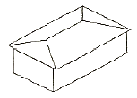
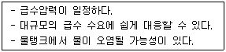
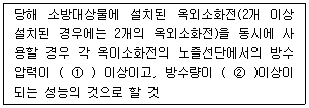
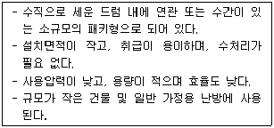
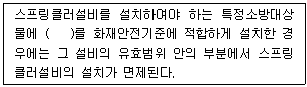
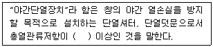

건축설비산업기사 (2009-05-10 기출문제)
1과목: 건축일반
1. 다음 중 목구조 뼈대의 변형을 방지하는 목적으로 사용하지 않는 것은?
- 부축벽
- 귀잡이
- 버팀대
- 가새
(정답률: 61%)

2. 다음 반자의 분류 중 널반자에 속하지 않는 것은?
- 치받이널반자
- 구성반자
- 살대반자
- 우물반자
(정답률: 74%)
3. 목조 벽체를 구성하는 부재 중 상부에서 내려오는 하중을 기초에 전달하는 역할을 수행하는 것은?
- 토대
- 깔도리
- 층도리
- 가새
(정답률: 80%)
4. 사무소건축의 코어시스템에 관한 설명 중 옳지 않은 것은?
- 공용부분을 한 곳에 집약시킴으로 사무소의 유효면적이 증대된다.
- 설비요소의 집약으로 순환성, 효율성이 증대된다.
- 편심 코어형은 바닥면적이 큰 고층 규모의 오피스에 적합하다.
- 중심 코어형은 내부공간과 외관이 획일적으로 되기 쉽다.
(정답률: 86%)
5. 다음 중 PC구조에 대한 설명으로 옳지 않은 것은?
- 기계화시공으로 공기가 단축된다.
- 현장 거푸집공사가 절감된다.
- 정밀도가 높고 고강도 콘크리트 부재가 사용가능하다.
- 접합부 강도가 라멘구조에 비해 뛰어나다.
(정답률: 72%)
6. 다음 그림과 같은 지붕의 명칭은?

- 박공지붕
- 모임지붕
- 합각지붕
- 방형지붕
(정답률: 89%)
7. 다음 중 병실 계획에 관한 설명으로 옳지 않은 것은?
- 병실의 창면적은 실내가 어둡지 않도록 충분한 채광이 이루어지도록 계획한다.
- 창대 높이는 90cm 이하로 환자가 병상에서 외부 전망을 볼 수 있게 한다.
- 병실 출입구는 쌍여닫이로 하고 미닫이로는 하지 않는다.
- 환자마다 머리 후면에 조명 설비를 개별적으로 한다.
(정답률: 83%)
8. 다음 중 호텔건축의 기능적 분류에 해당되지 않는 것은?
- 요리부분
- 관리부분
- 사교부분
- 숙박부분
(정답률: 86%)
9. 철골구조물의 슬래브 거푸집으로 가장 적당한 것은?
- 유로폼(euro form)
- 데크플레이트(deck plate)
- 슬립폼(slip form)
- 테이블폼(table form)
(정답률: 77%)
10. 학교의 배치형식 중 분산병렬형의 특징이 아닌 것은?
- 편복도로 할 경우 복도면적을 많이 차지하지 않고 유기적인 구성이 가능하다.
- 일조, 통풍 등 교실의 환경조건이 균등하다.
- 구조계획이 간단하다.
- 동선이 길어지고 각 건물사이의 연결을 필요로 한다.
(정답률: 53%)
11. 초등학교의 건축계획에 관한 내용으로 옳지 않은 것은?
- 저학년은 될 수 있으면 1층에 있게 하며, 교문에 근접시킨다.
- 저학년의 경우 마당을 둘러싸는 형, 특히 차폐되어 고립된 교실이 이상적인 조건으로 유구된다.
- 저학년에서는 V형의 학교운영방식을 고려하는 것이 좋다.
- 동 학년의 학급은 동일한 층에 둔다.
(정답률: 32%)
12. 공동주택 건물의 인동간격에 관한 설명으로 옳지 않은 것은?
- 동지를 기준으로 한다.
- 태양의 고도 및 일조권에 관계가 있다.
- 건물의 높이와 관계가 있다.
- 최소한 6시간 이상의 일조시간을 유지해야 한다.
(정답률: 62%)
13. 한쪽 박공면은 원호로 하고 대립되는 박공면은 직선으로 하여 평행이동 시켜서 이루는 곡면으로 만들어지는 셸은?
- HP형 셸
- 원통형 셸
- 타원포물선곡면 셸
- 코노이드 셸
(정답률: 86%)
14. 다음 중 철근콘트리트 구조에 대한 설명으로 옳지 않은 것은?
- 콘크리트는 철근이 녹스는 것을 방지한다.
- 철근과 콘크리트의 부착력향상을 위하여 이형철근 대신 원형철근을 사용하는 것이 좋다.
- 콘크리트는 내구·내화성이 있어 철근을 피복 보호하여 구조체는 내구·내화적이 된다.
- 철근과 콘크리트는 선팽창계수가 거의 같다.
(정답률: 66%)
15. 상점에서의 측면판매에 대한 설명 중 옳지 않은 것은?
- 상품이 손에 잡혀서 충동 구매가 이루어 질 수 있다.
- 판매원의 정위치를 정하기 어렵고 불안정하다.
- 진열면적이 커지고 상품에 친근감이 있다.
- 포장이 편리하며 시계, 귀금속, 카메라 상점에서 일반적으로 사용된다.
(정답률: 90%)
16. 다음 중 창문틀 밑에 쌓으며 물흘림, 물끊기가 달린 것은?
- 인방블록
- 장식블록
- 창대블록
- 창쌤블록
(정답률: 67%)
17. 상점계획에 관한 설명 중 옳지 않은 것은?
- 종업원과 고객의 동선은 분리되지 않아야 한다.
- 종업원의 동선은 짧게, 고객의 동선은 길게 한다.
- 상점의 총면적이란 일반적으로 건축면적 가운데 영업을 목적으로 사용되는 면적을 말한다.
- 상품 이동 동선은 반입, 보관, 포장, 발송과 같은 작업 때문에 필요한 공간이다.
(정답률: 80%)
18. 다음 중 도서관 출입구 계획으로 옳지 않은 것은?
- 이용자와 직원 및 서적의 출입구는 분리하다.
- 규모가 큰 경우 아동과 성인의 출입구를 분리한다.
- 집회공간은 전용의 출입구를 둔다.
- 이용자들의 출입구는 최대한 여러 곳에 분산 배치한다.
(정답률: 94%)
19. 계단의 구성요소 중 한 계단의 수직면을 무엇이라 하는가?
- 계단실(stair case)
- 디딤판(tread)
- 챌판(riser)
- 계단참(stair landing)
(정답률: 87%)
20. 다음 중 주택의 부지 선정요건으로 가장 적당하지 않은 것은?
- 전망이 트이고 신선한 공기와 일광을 받을 수 있는 부지이어야 한다.
- 북쪽으로 경사진 부지이어야 한다.
- 지반이 견고하고 배수가 잘 되어야 한다.
- 교통이 편리하고 통근거리에 무리가 없어야 한다.
(정답률: 97%)
2과목: 위생설비
21. 다음 중 물의 부력을 이용하여 기능이 발휘되는 기구는?
- 체크밸브
- 볼탭
- P 트랩
- 스트레이너
(정답률: 71%)
22. 다음과 같은 특징을 갖는 급수방식은?

- 수도직결방식
- 고가탱크방식
- 압력탱크방식
- 펌프직종방식
(정답률: 77%)
23. 주찰관의 접합 방법이 아닌 것은?
- 코킹 접합
- 기계적 접합
- 모코 접합
- 고무링 접합
(정답률: 23%)
24. 다음 중 공동주택 단지의 급수설계를 할 때 가장 먼저 이루어져야 할 사항은?
- 급수량의 산정
- 수수조의 크기 산정
- 급수관 재료의 결정
- 수도 인입관의 관경 선정
(정답률: 96%)
25. 트랩의 설치목적으로 가장 알맞은 것은?
- 물의 역류 차단
- 위생기구의 수명 연장
- 배수관내의 환기
- 하수 가스의 실내 침입 차단
(정답률: 72%)
26. 19층 건물에서 옥내소화전의 설치개수가 가장 많은 층의 설치개수가 8개 일 때, 이 건물에 설치할 옥내소화전설비의 수원의 저수량은 최소 얼마 이상이어야 하는가?
- 5.2 m3
- 10.4 m3
- 13 m3
- 20.8 m3
(정답률: 50%)
27. 싱크대 수도꼭지에 압력탱크식으로 급수하려 한다. 수도꼭지는 탱크로부터 수직 높이 10m 인 곳에 설치되어 있고, 배관의 전마찰손실수두를 7m라고 할 때 이 압력탱크의 최저필요압력은? (단, 수도꼭지의 최저수압은 30 kPa 이며, 1 kPa = 0.1 mAq 이다.)
- 400 kPa
- 300 kPa
- 200 kPa
- 100 kPa
(정답률: 62%)
28. 10℃의 물을 70℃로 가열하여 매시 500L씩 공급하려 한다. 필요한 가스용량은? (단, 가스의 발열량은 42,000 kJ/m3, 열효율은 60%, 물의 비열은 4.19 kJ/kg·K 이다.)
- 3 m3/h
- 4 m3/h
- 5 m3/h
- 6 m3/h
(정답률: 47%)
29. 간접가열식 급탕방식에 대한 설명 중 옳지 앟은 것은?
- 저탕조내에 가열코일이 설치되어 있다.
- 난방용 보일러의 열원을 이용할 수 있다.
- 고압보일러를 설치하여야 한다.
- 대규모 급탕설비에 적합하다.
(정답률: 69%)
30. 대변기 세정밸브(F.V)의 급수관경은 최소 얼마 이상이어야 하는가?
- 15 mm
- 20 mm
- 25 mm
- 30 mm
(정답률: 84%)
31. 관속을 유량 36m3/h의 물이 흐르고 있다. 이때 유속이 2m/sec 이내가 되도록 관경을 결정하려 한다. 관의 안지름은 최소 몇 mm 이상이 되어야 하는가?
- 65 mm
- 80 mm
- 150 mm
- 475 mm
(정답률: 53%)
32. 다음 중 배수설비에서 트랩의 봉수파기 원인과 가장 관계가 먼 것은?
- 모세관 현상
- 캐비테이션(공동현상)
- 자기사이펀 작용
- 증발 현상
(정답률: 74%)
33. 다음 중 펌프의 성능을 결정하는 항목과 가장 관계가 먼 것은?
- 양수량
- 양정
- 소요 동력
- 배관 구경
(정답률: 69%)
34. 급수 배관내에 공기실(air chamber)을 설치하는 이유는?
- 수압시험을 하기 위하여
- 배관에 구배를 주기 위하여
- 수격작용을 방지하기 위하여
- 배수계통을 설치하기 위하여
(정답률: 100%)
35. 강제순환식 급탕설비에서 온수의 공급온도가 60℃이고 반송온도는 57℃일 때, 배관 전계통의 열손실이 5,000W 일 경우 순환펌프의 순환수량은? (단, 물의 비열은 4.19 kJ/kg·K 이다.)
- 16.7 L/min
- 23.9 L/min
- 166.7 L/min
- 250.0 L/min
(정답률: 61%)
36. 오수 중의 분해 가능한 유기물이 용존 산소의 존재하에 미생물의 작용에 의해 산화분해되어 안정한 물질로 변해갈 때 소비하는 산소량을 무엇이라 하는가?
- PPM
- COD
- BOD
- SS
(정답률: 96%)
37. 다음의 옥외소화전설비에 관한 설명 중 ( ) 안에 알맞은 내용은?

- ① 0.17 MPa, ② 350 L/min
- ① 0.25 MPa, ② 350 L/min
- ① 0.17 MPa, ② 250 L/min
- ① 0.25 MPa, ② 250 L/min
(정답률: 67%)
38. 다음 중 터보형 펌프에 속하지 않는 것은?
- 볼류트 펌프
- 터빈 펌프
- 피스톤 펌프
- 사류 펌프
(정답률: 56%)
39. 급탕설비기의 부속기기 중 서머스탯(thermostat)의 가장 주된 용도는?
- 소음 제거
- 응축수 배출
- 온수온도 자동조절
- 이상압력 배출
(정답률: 84%)
40. 호텔의 주방이나 레스토랑의 주방 등에서 배출되는 세정배수 중의 유지분을 포집하기 위해 사용되는 포집기는?
- 샌드 포집기
- 그리스 포집기
- 오일 포집기
- 플라스터 포집기
(정답률: 83%)
3과목: 공기조화설비
41. 다음 설명에 알맞은 보일러는?

- 연관 보일러
- 입형 보일러
- 수관 보일러
- 주첼제 보일러
(정답률: 88%)
42. 변풍량 방식에 사용되는 변풍량 유니트에 대한 설명 중 옳은 것은?
- 바이패스형은 부하의 감소에 따라 교축기구에 의해 풍량을 조절하는 것으로, 덕트의 정압변화에 대응할 수 있는 정압제어가 필요하다.
- 유인형은 난방시에는 실내발생열을 열원으로 이용할 수 있으나 실내의 오염물 제거 성능이 낮다.
- 바이패스형은 송풍동력을 절감시킬 수 있고, 덕트계통의 증설이나 개설에 대한 적응성이 크다.
- 슬롯형은 송풍덕트 내의 정압제어가 필요 없고, 유니트의 소음발생이 적다.
(정답률: 36%)
43. 다음의 열펌프(heat pump)에 과한 설명 중 옳지 않은 것은?
- 응축기의 방열량을 난방에 이용한다.
- 흡수식 냉동기는 사용할 수 없다.
- 저온물질측에 증발기가 위치한다.
- 응축기는 고온물질측에 위치한다.
(정답률: 53%)
44. 다음 중 온수난방 배관에서 역환수방식(reverse return system)을 채택하는 주된 이유는?
- 균등한 유량분배
- 재료비 절감
- 펌프 동력절감
- 수격작용 방지
(정답률: 87%)
45. 다음 고속덕트방식에 대한 설명 중 옳지 않은 것은?
- 덕트의 단면적을 작게 할 수 있다.
- 일반적으로 리턴덕트는 저속덕트방식으로 한다.
- 소음이 문제가 되므로 이에 대한 대처가 필요하다.
- 저속덕트방식에 비해 동력비가 적게 소요된다.
(정답률: 82%)
46. 열이 이동하는 형식 중 전도에 대한 설명으로 옳은 것은?
- 순수한 열전도는 액체 내에서만 발생한다.
- 유체의 흐름에 의해서 열이 이동되는 것을 총칭한다.
- 열에너지가 전자파의 형태로 물체로부터 방출되는 현상이다.
- 물체에 온도차가 있을 때 열이 온도가 높은 곳에서 낮은 곳으로 그 물체를 통하여 이동되는 현상이다.
(정답률: 85%)
47. 거주인원이 10명인 사무실의 필요환기량은? (단, 1인당 CO2 배출량은 0.02 m3/h 이고, 실내 CO2 허용 한도는 1000 ppm, 외기 중의 CO2 농도는 300 ppm 이다.)
- 86 m3/h
- 186 m3/h
- 286 m3/h
- 386 m3/h
(정답률: 50%)
48. 다음의 공기조화방식 중 전수방식에 속하는 것은?
- 팬코일 유닛방식
- 단일덕트방식
- 2중덕트방식
- 각층 유닛방식
(정답률: 80%)
49. 다음 중 팽창탱크의 기능에 대한 설명으로 옳지 않은 것은?
- 팽창된 물의 배출을 방지하여 장치의 열손실을 방지한다.
- 장치내의 온도변화에 따른 물의 체적변화를 흡수한다.
- 밀폐식 팽창탱크에 있어서는 장치내의 주딘 공기배출구로 이용된다.
- 장치의 휴지중에도 배관계를 일정압력 이상으로 유지한다.
(정답률: 63%)
50. 다음 중 냉방시 잠열부하의 원인이 되지 않는 것은?
- 인체에서 발생하는 열
- 재열부하
- 조리기구로부터의 취득열
- 환기부하
(정답률: 46%)
51. 냉각탑의 쿨링 어프로치(cooling approach)란?
- 냉각탑 입구수온(℃) - 냉각탑 출구수온(℃)
- 냉각탑 입구수온(℃) - 입구공기의 습구온도(℃)
- 냉각탑 출구수온(℃) - 입구공기의 습구온도(℃)
- 냉각탑 입구수온(℃) - 입구공기의 건구온도(℃)
(정답률: 60%)
52. 보일러 주변배관에 하트포트 접속법을 사용하는 가장 주된 목적은?
- 보일러의 일정수온유지
- 보일러의 일정압력유지
- 보일러의 안전수면유지
- 보일러의 압력초과방지
(정답률: 92%)
53. 4,000W의 열을 발산하는 기계실의 온도를 26℃로 유지시키기 위한 필요 환기량(m3/h)은? (단, 외기온도 6℃, 공기의 정압비열 1.01 kJ/kg·K, 공기의 밀도 1.2 kg/m3, 기계실의 열전달손실은 무시한다.)
- 225.0 m3/h
- 396.8 m3/h
- 594.1 m3/h
- 775.9 m3/h
(정답률: 61%)
54. 난방시 벽체의 관류손실 열량을 계산할 때 방위계수를 가장 적게 취하는 방위는?
- 북쪽
- 동쪽
- 남서쪽
- 남쪽
(정답률: 69%)
55. 다음 중 냉동기의 응축기에서 냉각탑으로 흐르는 물의 명칭은?
- 응축수
- 냉수
- 온수
- 냉각수
(정답률: 89%)
56. 공기조화방식 중 복사냉난방방식에 대한 설명으로 옳은 것은?
- 냉방시 조명부하를 처리할 수 없다.
- 냉방시에는 패널에 결로의 우려가 있다.
- 풍량이 많아서 보통 이상의 풍량을 필요로 하는 경우에 적당하다.
- 잠열부하가 큰 경우에는 효과적이나 현열부하가 큰 경우에는 사용이 곤란하다.
(정답률: 40%)
57. 중간기에도 냉방이 필요할 경우가 있다. 중간기의 냉방부하 요인 중 가장 영향이 큰 것은?
- 구조체를 통한 관류열량
- 내부발생열
- 틈새바람에 의한 부하
- 외기도입 부하
(정답률: 43%)
58. 다음 중 증기트랩의 설치위치로 가장 적당한 곳은?
- 펌프의 입구
- 펌프의 출구
- 방열기 입구
- 방열기 환수구
(정답률: 77%)
59. 다음 습공기의 엔탈피에 관한 설명 중 틀린 것은?
- 단위는 kJ.kg′를 사용한다.
- 건구온도가 높을수록 엔탈피는 커진다.
- 절대습도가 높을수록 엔탈피는 작아진다.
- 건공기의 엔탈피와 수증기의 엔탈피 합으로 나타낸다.
(정답률: 53%)
60. 4각 덕트의 엘보우에서 장변치수가 150mm, 국부저항손실계수는 0.33 이며, 재료의 마찰저항계수는 0.03 이라면 국부저항의 상당길이(m)는?
- 1.12
- 1.65
- 2.33
- 3.75
(정답률: 58%)
4과목: 건축설비관계법규
61. 옥내피난계단의 구조와 관련된 기준 내용으로 옳지 않은 것은?
- 계단실의 실내에 접하는 부분의 마감은 불연재료로 할 것
- 건축물의 내부와 접하는 계단실의 창문은 망이 들어있는 유리의 붙박이창을서 그 면적을 각각 2m2 이내로 할 것
- 건축물의 내부에서 계단실로 통하는 출입구의 유효너비는 0.9m 이상으로 할 것
- 계단은 내화구조로 하고 피난층 또는 지상까지 직접 연결되도록 할 것
(정답률: 50%)
62. 다음 중 내화 구조에 해당되지 않는 것은?
- 철큰콘크리트조의 벽으로써 두께가 7cm 인 것
- 철재로 보강된 콘크리트블럭조 계단
- 철재로 보강된 유리블럭 지붕
- 두께가 7cm인 벽돌조 외벽으로써 비내력벽인 것
(정답률: 52%)
63. 방화관리자를 두어야 하는 특정소방대상물 중 1급 방화관리대상물의 연면적 기준은?
- 5천제곱미터 이상
- 1만제곱미터 이상
- 1만5천제곱미터 이상
- 2만제곱미터 이상
(정답률: 66%)
64. 수동식소화기를 설치하여야 하는 특정소방대상물의 연면적 기준은?
- 10m2 이상
- 33m2 이상
- 50m2 이상
- 100m2 이상
(정답률: 83%)
65. 건축물의 용도가 운동시설 중 실내수영장으로서 당해 용도에 사용되는 바닥면적의 합계가 최소 얼마 이상인 경우 건축물의 건축허가 신청시 에너지 절약계획서를 제출하여야 하는가?
- 500 m2
- 2,000 m2
- 3,000 m2
- 10,000 m2
(정답률: 55%)
66. 건축물의 용도가 판매 및 영업시설인 경우, 건축물의 피난층 또는 피난층의 승강장으로부터 건축물의 바깥쪽에 이르는 통로에 경사로를 설치하여야 하는 연면적 기준은?
- 2,000 m2 이상
- 3,000 m2 이상
- 5,000 m2 이상
- 6,000 m2 이상
(정답률: 30%)
67. 다음 중 피난 용도로 쓸 수 있는 광장을 옥상에 설치하여야 하는 대상 건축물은?
- 5층 이상인 층이 판매시설의 용도로 사용되는 건축물
- 5층 이상인 층이 의료시설 중 병원의 용도로 사용되는 건축물
- 5층 이상인 층이 위락시설 중 무도학원의 용도로 사용되는 건축물
- 5층 이상인 층이 공동주택의 용도로 사용되는 건축물
(정답률: 78%)
68. 판매 및 영업시설로서 당해 용도로 사용되는 부분의 바닥면적의 합계가 최소 얼마 이상인 경우 연결살수설비를 설치하여야 하는가?
- 300 m2
- 500 m2
- 1,000 m2
- 1,500 m2
(정답률: 65%)
69. 다음 중 소화설비에 해당되지 않는 것은?
- 연결살수설비
- 스프링클러실비
- 옥외소화전설비
- 소화기구
(정답률: 84%)
70. 다음의 특정소방대상물의 소방시설 설치의 면제기준과 관련된 내용 중 ( ) 안에 적합한 설비는?

- 물분무소화설비
- 비상경보설비
- 옥외소화전설비
- 피난설비
(정답률: 91%)
71. 외기에 직접 면하고 1층 또는 지상으로 연결된 출입문 중 방풍구조로 하지 않을 수 있는 출입문의 너비 기준은?
- 1.0m 이하
- 1.2m 이하
- 1.5m 이하
- 1.8m 이하
(정답률: 70%)
72. 하수도법상 건물·시설 등에서 발생하는 오수를 다시 처리하여 생활용수·공업용수 등으로 재이용하는 시설로 정의되는 것은?
- 개인하수처리시설
- 공공하수처리시설
- 중수도
- 배수섭리
(정답률: 75%)
73. 오피스텔의 난방설비를 개별난방방식으로 하는 경우에 대한 기준 내용으로 옳지 않은 것은?
- 보일러를 설치하는 곳과 거실 사이의 경계벽은 출입구를 제외하고는 방화구조의 벽으로 구획할 것
- 보일러실의 윗부분에는 그 면적이 0.5제곱미터 이상이 환기창을 설치할 것
- 난방구힉마다 내화구조로 된 벽·바닥과 갑종방화문으로 된 출입문으로 구획할 것
- 보일러의 연도는 내화구조로서 공동연도로 설치할 것
(정답률: 56%)
74. 건축물을 건축하거나 대수선하는 경우 국토해양부령으로 정하는 구조기준 및 구조계사에 따라 그 구조의 안전을 확인하여야 하는 대상 건축물에 속하지 않는 것은?
- 기둥과 기둥 사이의 거리가 10m인 건축물
- 높이가 12m인 건축물
- 층수가 3층인 건축물
- 처마높이가 10m인 건축물
(정답률: 53%)
75. 교육연구시설 중 학교의 교실에서 채광을 위하여 설치하는 창문등의 면적은 그 교실의 바닥면적의 최소 얼마 이상이어야 하는가?
- 10분의 1
- 20분의 1
- 30분의 1
- 40분의 1
(정답률: 70%)
76. 비상용 승강기를 설치하여야 하는 건축물의 높이 기준은?
- 21m 초과
- 31m 초과
- 41m 초과
- 51m 초과
(정답률: 84%)
77. 다음 중 건축물의 용도분류상 의료시설에 해당하지 않는 것은?
- 종합병원
- 치과병원
- 요양소
- 한의원
(정답률: 96%)
78. 다음은 건축물의 에너지절약 설계기준에 사용되는 야간 단열장치의 용어 정의이다. ( ) 안에 알맞은 내용은?

- 0.1 m2·K/W
- 0.2 m2·K/W
- 0.3 m2·K/W
- 0.4 m2·K/W
(정답률: 88%)
79. 지상층 중 어느 한 개의 바닥면적이 900m2 일 경우 무창층으로 인정되기 위한 개구부의 최대 면적 합계는?
- 45 m2
- 30 m2
- 22.5 m2
- 18 m2
(정답률: 62%)
80. 다음 중 비상용승강기의 승강장에 설치하는 배연설비의 구조와 과련되 기준 내용으로 옳지 않은 것은?
- 배연구 및 배연풍도는 불연재료로 할 것
- 배연구에 설치하는 자동개방장치는 손으로도 열고 닫을 수 있도록 할 것
- 배연구는 평상시에는 열리 상태를 유지할 것
- 배연구가 외기에 접하지 아니하는 경우에는 배연기를 설치할 것
(정답률: 69%)